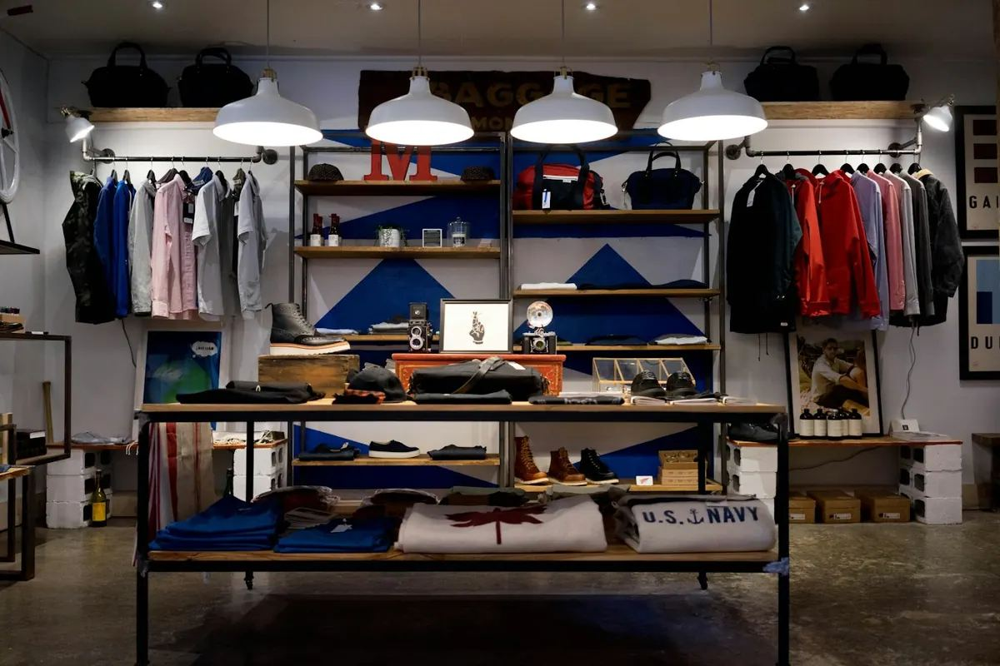

Kansas City's Small Business Boom: Why the Metro Keeps Winning


Every banker keeps mental scoreboards. Mine tracks how often Kansas City shows up on national "best places for small business" lists — and after a while, you stop treating it as a coincidence and start asking what's actually driving it.
I've spent my career at Bank Midwest watching entrepreneurs open, grow, and occasionally close shop in this metro. From that vantage point, KC's small business boom isn't luck or a single big employer's halo. It's a stack of advantages that reinforce each other, and understanding them is whether you ride the wave or watch from the shore.
Advantage one: you can actually afford to try
Ask a founder in San Francisco or Austin what their rent was in year one and watch them wince. In Kansas City, commercial leases, wages, and living costs sit well below the coastal benchmarks, which lowers the scariest number in small business: the monthly burn.
From the lending side, this is decisive. A lower burn means a business can survive its awkward adolescent phase — the first eighteen months when revenue rarely matches the spreadsheet. Lower fixed costs mean a smaller loan, a shorter runway to break-even, and a founder who can afford to be patient. Patience is the most underrated asset in business.
Advantage two: talent that doesn't require a bidding war
KC has quietly become a genuinely good place to hire. The metro's universities pump out graduates every May, and the city has gotten better at keeping them — not with hype, but with livability. When you can hire a competent marketing person, bookkeeper, or junior developer without San Francisco salary math, small teams punch above their weight.
I see this in the businesses I lend to. A five-person company in the Crossroads can out-market a fifty-person company on the coast because their costs don't force impossible choices.
Advantage three: the community actually shows up
This one is hard to quantify, so let me try anyway. Kansas City has a genuine buy-local reflex. Neighborhood associations, chambers, and civic groups don't just announce support for small business — they demonstrate it, consistently, with their wallets and their Saturday mornings.
In Kansas City, the question at a new shop's counter is never "why did you open here?" It's "what took you so long?"
When a new business opens, the line forms. When a small business hits a rough patch, neighbors Google "how to help." That cultural floor beneath entrepreneurs is real capital — it just doesn't appear on any balance sheet.
Advantage four: the State Line works both ways
Kansas and Missouri meet in the middle of this metro, and savvy owners use the border like a tool. Kansas offers certain tax advantages; Missouri others. Retailers time openings around border shopping patterns; service businesses stretch "local" to mean both states. I dug into the mechanics in my piece on how two states shape one KC economy, but the headline is simple: KC entrepreneurs think in metro terms, not city or state terms.
Advantage five: small business banking that behaves like a partner
Here's my selfish advantage, and I'll own it. Kansas City has a deep bench of community banks — institutions where lending decisions are made by people who know the neighborhood, the industry, and sometimes the founder by name. When the banker can drive past your storefront on the way home, underwriting stops being a blood sport and becomes a conversation.
That's not a small thing when credit tightens nationally. Access to capital is the difference between an idea and a storefront, and KC's banking culture materially lowers that barrier. For more on how these relationships work, see how community banks fuel KC's main streets.
Who's actually doing the starting
The boom is broad, but a few patterns stand out from my side of the desk:
- Food and beverage. KC's food scene is a business story in its own right — tight margins, big heart. More in my post on the KC food scene as business.
- Skilled trades. Electricians, HVAC, plumbing — businesses with a truck and a reputation print money in this climate.
- Professional services. Accountants, agencies, consultants serving the small businesses above them.
- Neighborhood retail. The neighborhood-by-neighborhood growth map has real stories in it.
What this means if you're thinking about starting something
The window is open, but it isn't open forever. Rents are creeping. Talent is getting more expensive. The entrepreneurs winning in Kansas City right now share three habits: they start small and specific, they get their foundation right early — including a professional website — and they talk to a community banker before they need the loan, not after.
Kansas City keeps winning because the people building here keep showing up. Do the same, and the metro has a way of showing up for you.
Charlie Koch
President of Bank Midwest
Kansas City banker writing about community banking, small business growth, and the neighborhoods building this metro's economy — in plain language, always.